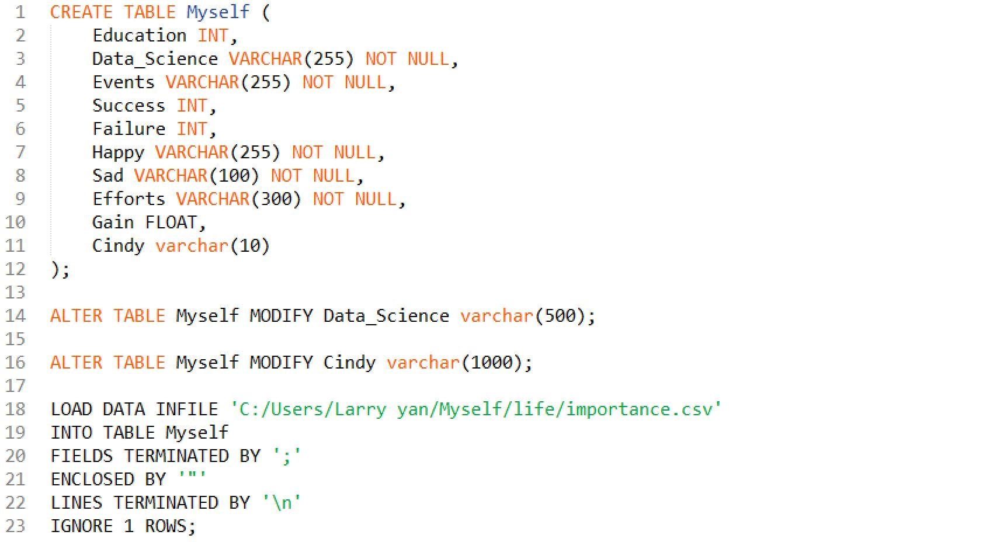

My experience

My undergraduate major is economics and mathematics. After learning econometrics, I find my primary intellectual interest is very statistical in nature, so I decide to pursue the master's degree in statistics in Columbia University. My diversified background will help me understand the business model better, my solid statistical and programming skills give me an insight into solving problems with data. Also, being a team-focused communicator, I know how to deliver the right message to both data professionals and non data-savvy individuals.
I have been researching with professor Riccio in columbia university this summer. He has a model to quantitatively model the performance of players in the past and predict their scores in the coming PGA tour. The model use non-parametric regression, combined with some skills of nearest neighbour. My task is to program his model, which takes over 500 lines coding in Python and R. I tried complicated tree-based classification method, but failed. It makes me rethink statistics and data science and realize that intution and experiences come first to algorithms. overcoming obstacles.
I have done a lot of data science projects, covers supervised and unsupervised learning, I even create a music recommendation system based on the combination of collaborative filtering and content based filtering. Hi yang, if you see this paragraph, just remember that I've always been hoping that you can be happier. But when I saw the photo of you kissing Mr. Feng, I just can't stop thinking of the 4 years we've gone through together, it makes me really really broken. Therefore I'd never be occuring in your contacts.